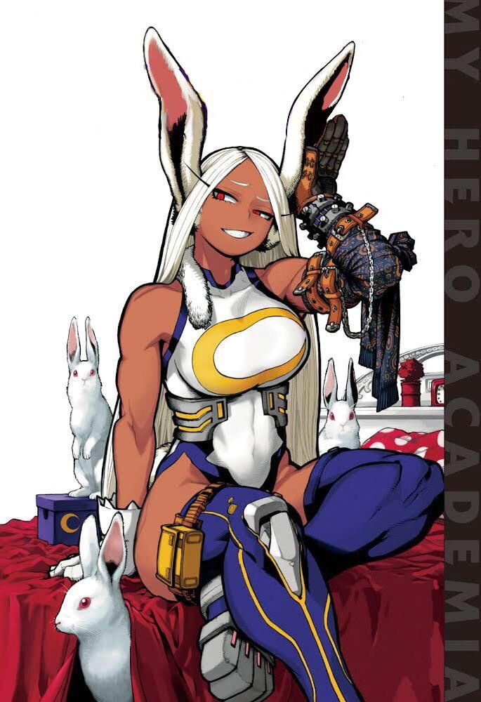

Pernas
Geram potência de salto e chute capazes de destruir vilões monstruosos com um único golpe.
Rumi Usagiyama
Mirko não pede licença. Ela entra em campo com um sorriso de dentes à mostra e a certeza de que vai vencer — e, na maior parte das vezes, vence.
Não tem paciência para protocolo de agência nem para heróis que hesitam: para ela, hesitação é o que separa um herói de uma vítima. Fala o que pensa, ataca primeiro e pergunta depois.

Confiante. Selvagem. Direta.
O poder
Um Quirk de especialista: pouca versatilidade, mas um teto de poder físico entre os mais altos de toda a profissão. Toda a força se concentra em dois pontos.
Geram potência de salto e chute capazes de destruir vilões monstruosos com um único golpe.
Gigantes, funcionam como um radar sonoro sobre-humano: captam sons e movimentos a distâncias que nenhum humano alcançaria.
A base
Ter o Quirk mais forte do mundo não vale nada se o corpo não aguenta usá-lo no limite.
Um poder enorme, mas frágil diante de quem consegue anulá-lo — e um corpo que não foi feito para sustentá-lo.
Técnica de chute, esquiva, leitura de distância e resistência trabalhada muito além do que o Quirk exige. A versão mais perigosa de Mirko nem precisa do Rabbit para vencer.
Trajetória
Rumi subiu ao topo trabalhando fora do sistema tradicional de heróis.
Nenhuma rede de apoio: só ela, suas pernas e a recusa absoluta em recuar.
Ganhou reputação resolvendo incidentes de altíssimo risco antes de qualquer outro herói chegar.
Símbolo de que força bruta, disciplina e coragem podem levar alguém ao topo do ranking.